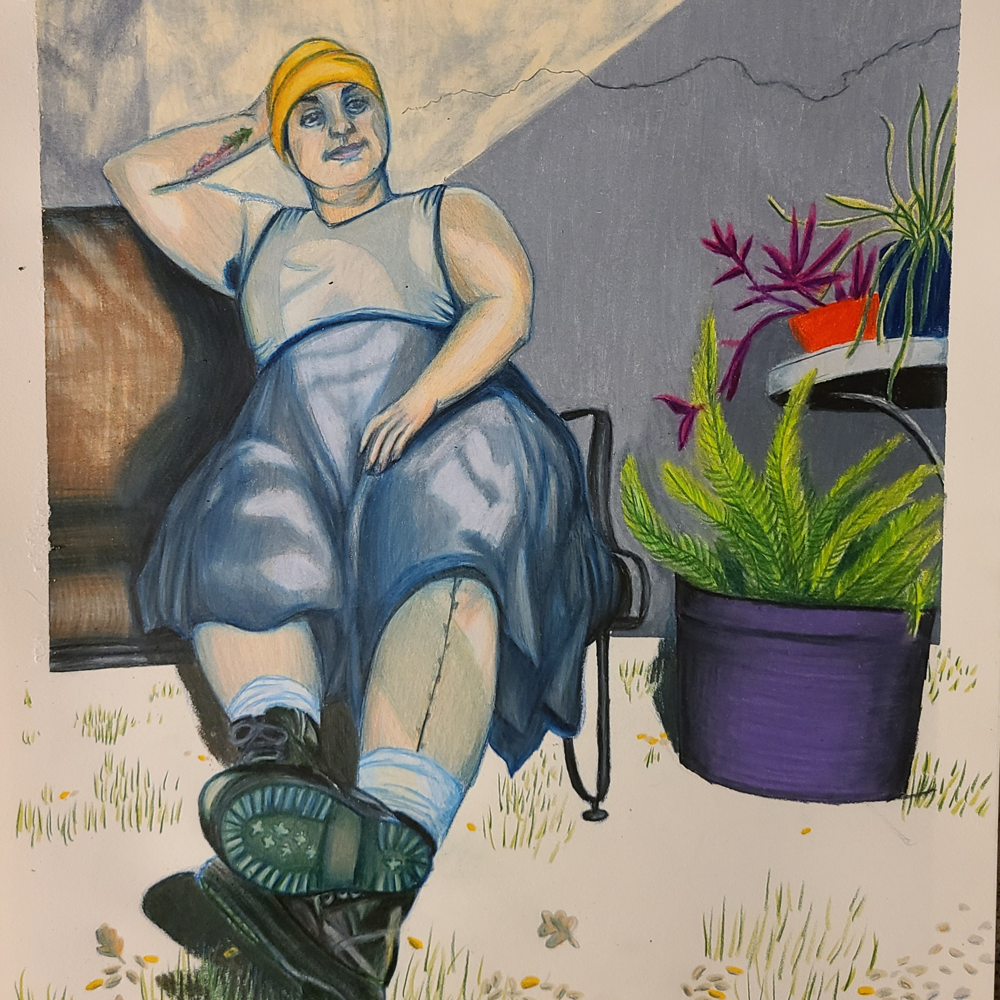

Portfolio of Raven Cruz

About Me
Howdy, I'm Raven. I'm an artist, a writer, and a game designer. I love PCG. I have a dog named Sagan and a wife named Ally. Talk to me about wave function collapse (the PCG algorithm, not the physics thing).